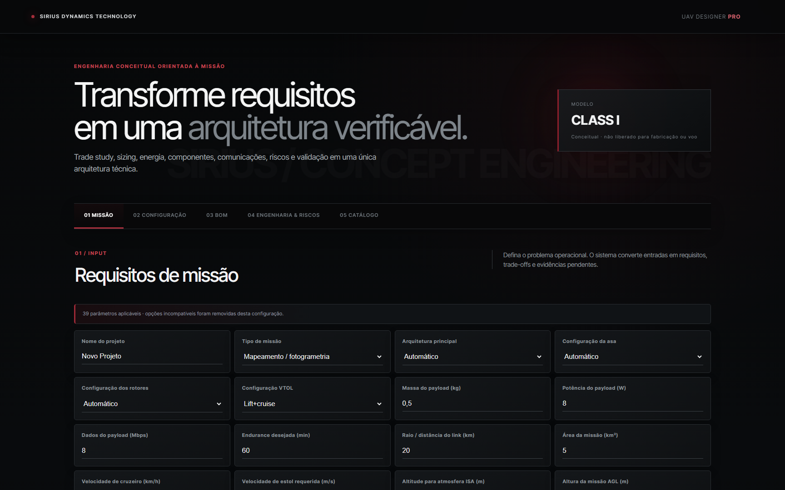
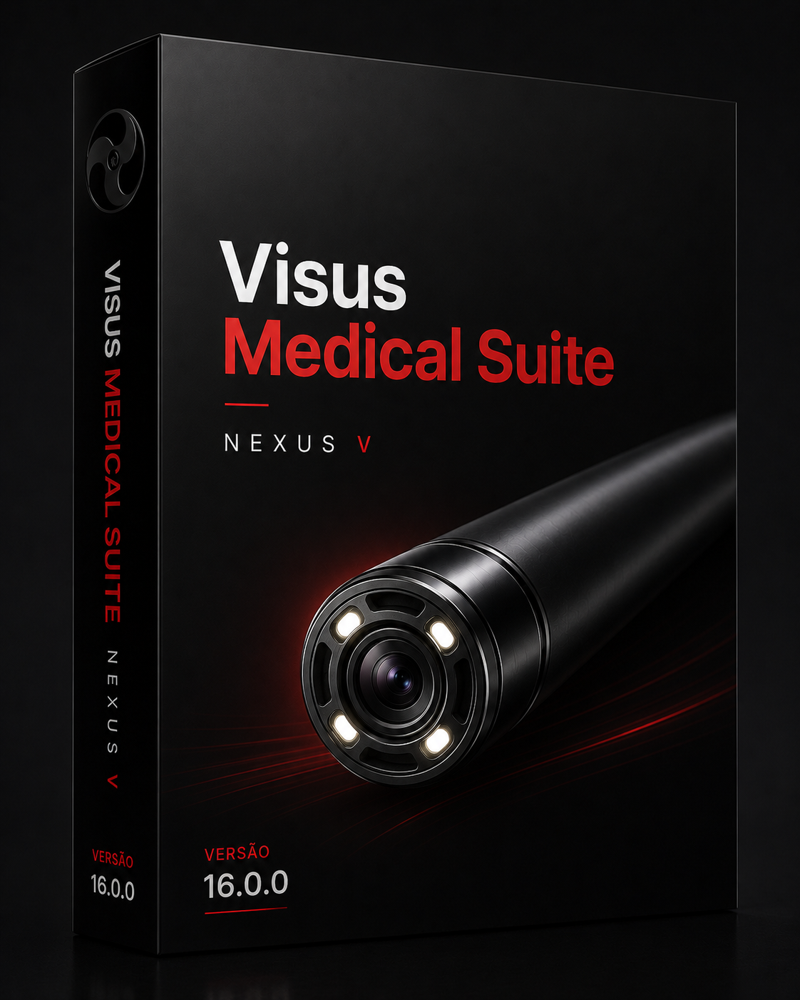
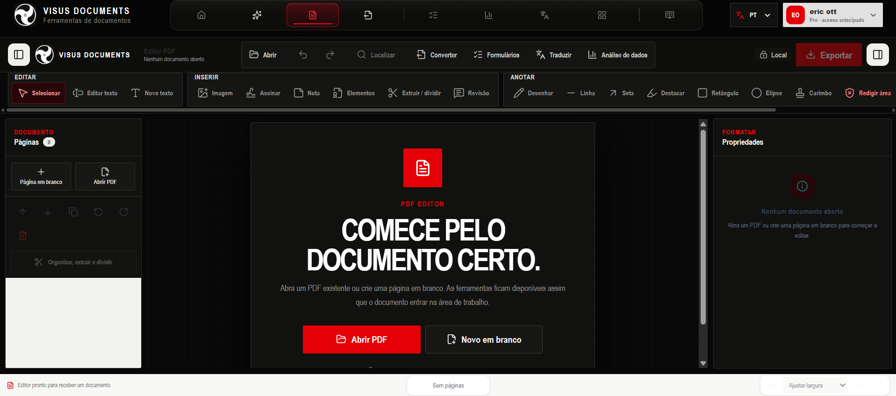

Sistemas
Plataformas desenvolvidas para transformar engenharia avançada em capacidade operacional, com arquitetura aberta, integração de sensores e configuração orientada à missão.
 Sistema aéreo não tripulado
Sistema aéreo não tripulado
Mobilidade vertical.
Eficiência em cruzeiro.
Uma plataforma aérea modular que decola e pousa verticalmente, opera sem pista e aproveita a eficiência de uma aeronave de asa fixa para ampliar a produtividade em missões de campo.
- Operação em áreas remotas ou com espaço restrito
- Configuração modular para diferentes sensores
- Aplicações em inspeção, mapeamento e monitoramento

Software de engenharia UAVDa missão à
arquitetura verificável.
Uma plataforma web para pré-dimensionar aeronaves não tripuladas, comparar configurações e organizar as decisões técnicas do conceito.
- Cálculos de massa, energia, aerodinâmica e desempenho
- Catálogo técnico com 1.456 registros e compatibilidade
- BOM, riscos, rastreabilidade e exportação integral em JSON

Tecnologia médicaO exame conectado
à história clínica.
Uma plataforma desktop para organizar imagens, vídeos, dados clínicos e laudos em um fluxo contínuo, seguro e adaptado à rotina de diferentes especialidades.
- Captura, documentação e laudo no mesmo ambiente
- Histórico organizado por paciente e exame
- Assistentes para qualidade e revisão profissional

Plataforma documentalDo arquivo à decisão.
Tudo conectado.
Uma plataforma para criar, editar, converter, traduzir, analisar e governar documentos em fluxos profissionais integrados.
- Documentos, planilhas, slides e design
- PDF, formulários, dados e automações
- Inteligência e governança documental